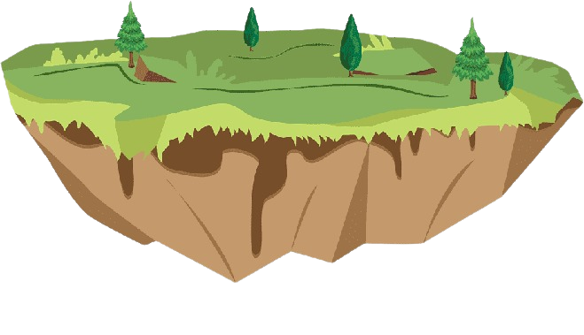

Suitable graphical conditions required for Maize cultivation are : 1. Temperature, 2. Rainfall, 3. Soils, 4. Topography and 5.Economic Conditions!
Temperature: 
Maize is grown in temperatures between 18°C and 27°C during the day and around 14°C during the night.But the most important factor is the 140 frost-free days. The crop is very susceptible to frost; therefore, its cultivation in temperate latitudes is limited.
Rainfall:
Maize is grown mostly in regions having annual rainfall between 60 cm to 110 cm. But it is also grown in areas having rainfall of about 40 cm.
Soils:
Maize grows in a wide range of soils, ranging from temperate podzols to the leached red soils of the tropics. But, the best suitable soil for maize is deep, rich soils of the sub-tropics, where there is abundant nitrogen.
Topography:
The plain regions are most suitable for maize cultivation, because this helps in use of machines. Although, maize is also cultivated on undulating lands as well as on lower slopes of the hills. Maize is also grown as a major crop of shifting cultivation.
Economic Conditions:
Unlike other crops maize can be cultivated with small capital. Uses of machines have reduced the labour requirements. Most of the maize grown is utilised within the country, although its limited international trade is also there.